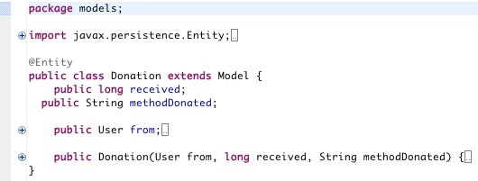
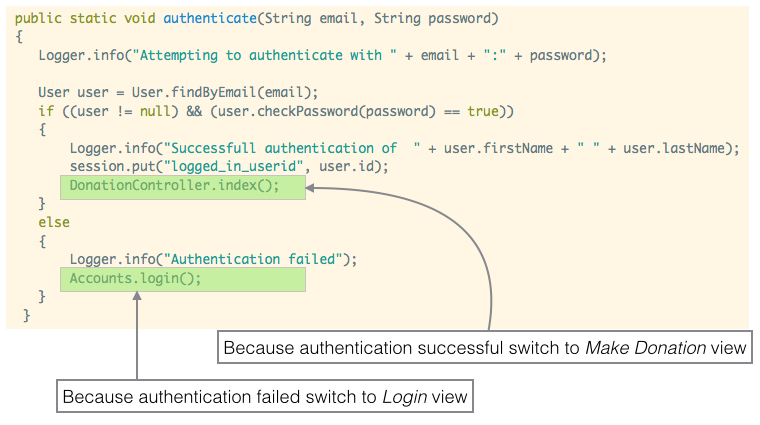
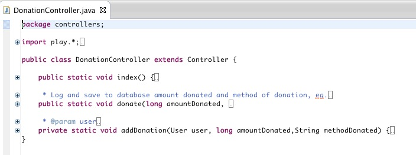
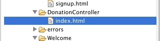
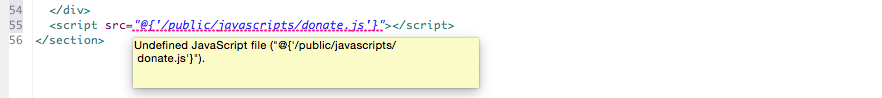
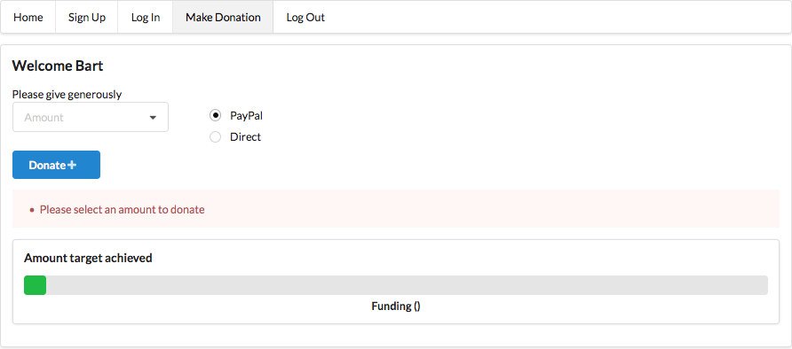

Step-by-step guide to building Donation application.
Features of iteration v2
Welcome
Sign on
Sign in
Make Donation
Log out
Models
User
Donation
Donation Model
The Donation Model class persists data regarding the donations received namely the amount received and the method donated (cash or PayPal).

Filename: Donation.java
package models;
import javax.persistence.Entity;
import javax.persistence.ManyToOne;
import play.db.jpa.Model;
@Entity
public class Donation extends Model
{
public long received;
public String methodDonated;
@ManyToOne
public User from;
public Donation(User from, long received, String methodDonated)
{
this.received = received;
this.methodDonated = methodDonated;
this.from = from;
}
}There is a many-to-one relationship between the Donation and User models.
A user may make 1 or several donations but a donation can only be received from one user.
In a commercial product this would be unlikely to be an adequate design and a many-to-many relationship would, most likely, be required.
Accounts
Two changes are introduced into the accounts controller:
Change the register method
Simply replace a call to index() with a call to login();
public static void register(User user)
{
Logger.info(user.firstName + " " + user.lastName + " " + user.email + " " + user.password);
user.save();
login();
}Modify authenticate
Introduce
DonationController.index();into the authenticate method which now becomes:
public static void authenticate(String email, String password)
{
Logger.info("Attempting to authenticate with " + email + ":" + password);
User user = User.findByEmail(email);
if ((user != null) && (user.checkPassword(password) == true))
{
Logger.info("Successfull authentication of " + user.firstName + " " + user.lastName);
session.put("logged_in_userid", user.id);
DonationController.index();
}
else
{
Logger.info("Authentication failed");
Accounts.login();
}
}The purpose of this line of code is to automatically render the donation page once the user is authenticated.

DonationController

Filename: DonationController.java
package controllers;
import models.Donation;
import models.User;
import play.Logger;
import play.mvc.Controller;
public class DonationController extends Controller
{
public static void index()
{
User user = Accounts.getCurrentUser();
if (user == null)
{
Logger.info("Donation class : Unable to getCurrentuser");
Accounts.login();
}
else
{
Logger.info("Donation ctrler : user is " + user.email);
render(user);
}
}
/**
* Log and save to database amount donated and method of donation, eg.
* paypal, direct payment
*
* @param amountDonated
* @param methodDonated
*/
public static void donate(long amountDonated, String methodDonated)
{
Logger.info("amount donated " + amountDonated + " " + "method donated "
+ methodDonated);
User user = Accounts.getCurrentUser();
if (user == null)
{
Logger.info("Donation class : Unable to getCurrentuser");
Accounts.login();
}
else
{
addDonation(user, amountDonated,methodDonated);
}
index();
}
/**
* @param user
* @param amountDonated
*/
private static void addDonation(User user, long amountDonated,String methodDonated)
{
Donation bal = new Donation(user, amountDonated,methodDonated);
bal.save();
}
}views/DonationController
The placeholder template in views/DonationController is replaced as follows:

Filename: index.html
#{extends 'main.html' /} #{set title:'Donation Request' /}
<nav class="ui menu">
<a class="ui item" href="/">Home</a>
<a class="ui item" href="/signup">Sign Up</a>
<a class="ui item" href="/login">Log In</a>
<a class="ui active item" href="/donation">Make Donation</a>
<a class="ui item" href="/logout">Log Out</a>
</nav>
<section class="ui segment">
<h3>Welcome ${user.firstName}</h3>
Please give generously
<form class="ui form" action="/donation/donate" method="POST">
<div class="ui four column grid">
<div class="column">
<div class="ui selection dropdown">
<input name="amountDonated" type="hidden">
<div class="default text">Amount</div>
<i class="dropdown icon"></i>
<div class="menu">
<div class="item" data-value="100">$100</div>
<div class="item" data-value="500">$500</div>
<div class="item" data-value="1000">$1000</div>
</div>
</div>
</div>
<div class="column">
<div class="grouped inline fields">
<div class="field">
<div class="ui radio checkbox">
<input id="paypal" name="methodDonated" value="paypal" checked="checked" type="radio">
<label for="paypal">PayPal</label>
</div>
</div>
<div class="field">
<div class="ui radio checkbox">
<input id="direct" name="methodDonated" value="direct" type="radio">
<label for="direct">Direct</label>
</div>
</div>
</div>
</div>
</div>
<div class="ui blue submit button">Donate <i class="add icon"></i></div>
<div class="ui error message"></div>
</form>
<div class="ui segment">
<h4 class="ui header">Amount target achieved</h4>
<div class="ui green progress">
<div class="bar" style="width:${progress}"></div><!--"width:50%" "width:${progress}" -->
<div class="label">Funding (${progress})</div>
</div>
</div>
<script src="@{'/public/javascripts/donate.js'}"></script>
</section>The routes file needs an addition to facilitate posting data:
# Donation page
POST /donation/donate DonationController.donateObserve this line of code (line 57):
<div class="ui error message"></div>and this (line 66):
<script src="@{'/public/javascripts/donate.js'}"></script>Their function, together with the JavaScript file donation.js, is to disallow an attempt to donate without selecting an amount in the dropdown menu.
Should an error be flagged in Eclipse, as shown in Figure 1, check that the path to donate.js is correctly stated.

Here is the script code:
File: donation.js
$('.ui.dropdown').dropdown();
$('.ui.form')
.form({
amountDonated: {
identifier: 'amountDonated',
rules: [
{
type: 'empty',
prompt: 'Please select an amount to donate'
}
]
}
})
;Place this file in public/javascripts folder.
Preloaded data is extremely helpful during development as continuously initialising databases with data is both tedious and inefficient.
To preload data we place a class Bootstrap in the default folder and source the data from a file data.yml which we place in the conf directory.
Filename: Bootstrap.java
import java.util.List;
import play.*;
import play.jobs.*;
import play.test.*;
import models.*;
@OnApplicationStart
public class Bootstrap extends Job
{
public void doJob()
{
if (User.count() == 0)
{
Fixtures.loadModels("data.yml");
}
}
}Create a file data.yml in conf directory.
Filename: data.yml
User(homer):
usaCitizen: true
firstName: Homer
lastName: Simpson
email: homer@simpson.com
password: secret
User(marge):
usaCitizen: true
firstName: Marge
lastName: Simpson
email: marge@simpson.com
password: secret
User(lisa):
usaCitizen: true
firstName: Lisa
lastName: Simpson
email: lisa@simpson.com
password: secret
User(bart):
usaCitizen: true
firstName: Bart
lastName: Simpson
email: bart@simpson.com
password: secret
User(maggie):
usaCitizen: true
firstName: Maggie
lastName: Simpson
email: maggie@simpson.com
password: secretThis data will be loaded into the User database.
You might consider adding data for the Donation model also.
Here's a snippet that works with the above yml file.
Donation(first):
from: homer
received: 1000
methodDonated: cashYou may view this data through an SQL viewer, e.g. localhost:9000/@db when the embedded database is used.
Test the iteration by executing play run and exercising the various navigation tabs.
Test
Test the application.
Make several donations.

Commit this iteration to your donation repository, add a tag and push all to remote repo.
git add .
git commit -m 'iteration v2'
git tag -a v2 -m 'iteration v2'
git push && git push --tags